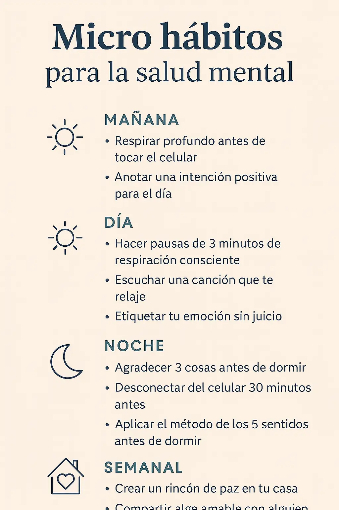

10 micro hábitos para mejorar tu salud mental cada día
Introducción emocional: el poder de lo pequeño y constante
A veces creemos que para sentirnos mejor necesitamos grandes cambios. Pero la verdad es que los micro hábitos para la salud mental pueden transformar tu vida desde lo más simple: un suspiro profundo, una palabra amable, una pausa consciente. Lo pequeño, cuando se repite con intención, se convierte en algo poderoso.
¿Qué son los micro hábitos para la salud mental?
Un micro hábito es una acción tan pequeña que parece insignificante, pero que repetida cada día genera un impacto acumulativo. A diferencia de los grandes hábitos que exigen tiempo y energía, los micro hábitos caben en cualquier rutina y no requieren motivación extraordinaria.
Por ejemplo: en lugar de meditar 30 minutos, puedes hacer 3 respiraciones profundas. En lugar de escribir una página entera, puedes anotar una sola intención positiva. La clave está en la constancia, no en la intensidad.
Micro hábitos para comenzar el día con claridad
1. Respirar profundo antes de tocar el celular
Antes de sumergirte en notificaciones y redes, regálate tres respiraciones lentas. Inhala por la nariz, exhala por la boca. Este hábito activa el sistema parasimpático y disminuye la ansiedad matutina.
2. Anotar una intención positiva para el día
Puedes escribir: “Hoy quiero estar presente en mis conversaciones” o “Hoy me trataré con paciencia”. Coloca esa frase en un post-it o en tu móvil. Esto orienta tu mente hacia el bienestar desde temprano.
Micro hábitos para regular emociones durante el día
3. Hacer pausas de 3 minutos de respiración consciente
En medio del trabajo o estudio, detente. Inhala 3 segundos, sostén 3, exhala 6. Esta técnica regula el ritmo cardíaco y mejora la concentración. Puedes usar apps como Insight Timer o simplemente cerrar los ojos.
4. Escuchar una canción que te relaje
Prepara una playlist que te haga sentir calma. Escuchar música por unos minutos puede cambiar tu estado emocional de forma inmediata. Aquí te dejamos una sugerencia en Spotify.
5. Etiquetar tu emoción sin juicio
Detente un momento y nombra lo que sientes: “Estoy frustrado”, “Me siento ansiosa”. Solo nombrarlo ayuda al cerebro a procesarlo. Es un acto de validación emocional.
Micro hábitos para cerrar el día con calma
6. Agradecer 3 cosas antes de dormir
Antes de cerrar los ojos, piensa o escribe tres cosas que agradeces hoy. Pueden ser pequeñas: una sonrisa, una comida rica, una ducha. El agradecimiento fortalece la resiliencia emocional.
7. Desconectar del celular 30 minutos antes de dormir
Establece una hora libre de pantallas. Sustituye ese tiempo por lectura suave, escritura o silencio. El cerebro necesita una transición para descansar.
8. Aplicar el método de los 5 sentidos antes de dormir
Observa: 5 cosas que ves, 4 que puedes tocar, 3 que oyes, 2 que hueles, 1 que saboreas. Esta técnica de grounding te ancla al presente y reduce la rumiación mental nocturna.
Micro hábitos semanales que fortalecen tu bienestar
9. Crear un rincón de paz en tu casa
Un cojín, una vela, una planta. No necesitas mucho para tener un espacio seguro. Aquí puedes practicar tus hábitos o simplemente respirar. Inspírate con nuestro artículo aquí.
10. Compartir algo amable con alguien
Un mensaje, una nota, un gesto. La amabilidad activa circuitos cerebrales de recompensa y conexión. Hazlo sin esperar nada a cambio. Te hará sentir mejor de inmediato.
Checklist descargable: 10 micro hábitos semanales
Descarga tu PDF con los 10 micro hábitos divididos por momentos del día. Ideal para imprimir o usar en tu móvil como recordatorio:
Infografía visual: micro hábitos agrupados por momentos del día

¿Prefieres ver todo de forma visual? Aquí tienes una guía rápida con hábitos matutinos, diurnos, nocturnos y semanales para tu bienestar.
Enlaces útiles en BienestarMental.top
- Guía de respiración consciente
- Cómo crear un rincón de paz en casa
- La pausa consciente frente al estrés
Preguntas frecuentes sobre micro hábitos para la salud mental
¿Cuánto tiempo toma consolidar un micro hábito?
En promedio 21 a 66 días. Pero con micro hábitos, el inicio es mucho más fácil y sostenible.
¿Qué pasa si me olvido un día?
No pasa nada. Vuelve al hábito sin culpa. Lo importante es la dirección, no la perfección.
¿Son efectivos realmente?
Estudios de neurociencia muestran que acciones repetidas moldean nuestras redes neuronales. Lo pequeño es poderoso.
¿Puedo compartirlos con niños?
Claro. De hecho, funcionan muy bien como rutinas visuales o juegos de autocuidado.
¿Necesito apps o herramientas?
No. Solo necesitas intención. Pero si te ayudan, hay apps como Habitica o Loop Habit Tracker.
¿Cuál es el mejor hábito para comenzar?
El más fácil para ti. Tal vez respirar al despertar o escribir una intención diaria.